Manual de uso del computador
Introducción
Un computador es algo que usamos cotidianamente para cualquiera de nuestras tareas diarias,
incluso cualquier tipo de actividad extra, el computador se ha convertido
en uno de los instrumentos mas utilizados por el ser humano, se dice que el número de ordenadores
personales en uso en todo el mundo supera ya las mil millones de unidades, según los datos de la
firma de análisis Gartner, en los ultimos años el computador se ha convertido en algo indispensable
en un hogar, registrando ventas de 292,3 millones de equipos adquiridos en todo el planeta en el año 2022.
Ya que se ha convertido en algo tan necesario, debriamos tener un conocimiento básico
de acuerdo al tema, por eso traje dos de los mantenimientos más usados:
Mantenimiento Preventivo
Es el tipo de mantenimiento que todas las empresas y profesionales deberían tener en cuenta en lo referente a ocuparse de la integridad y buen estado de sus ordenadores. Con el mantenimiento de tipo preventivo lo que estamos haciendo es prevenir. Y ya se sabe que siempr e es mejor prevenir que lamentar. Lo que hacemos es revisar los ordenadores y asegurarnos de que todo está en orden y que no hay ningún aspecto de los mismos que se encuentra en un estado crítico cerca de l colapso o de los fallos. Esto nos ayudará a que no se produzcan fallos en el sistema, nos aseguraremos de que la durabilidad de los equipos aumente y en cierta medida también es posible que consigamos que la eficacia de los ordenadores aumente.
Mantenimientos Preventivos:
1) Limpieza física del PC
 En primer lugar se debe encontrar un espacio cómodo para trabajar, amplio y bien
iluminado. En segunda instancia se debe contar con todos los elementos y herramientas
necesarias para llevar a cabo un trabajo en profundidad y dejar el equipo como si fuese
recién comprado.
En primer lugar se debe encontrar un espacio cómodo para trabajar, amplio y bien
iluminado. En segunda instancia se debe contar con todos los elementos y herramientas
necesarias para llevar a cabo un trabajo en profundidad y dejar el equipo como si fuese
recién comprado.
Entre las herramientas necesarias para esta labor encontramos: un destornillador de estrella
o tipo Phillips, un destornillador de pala o paleta, pinceles de pelo suave (Pelo de Martha)
o de maquillaje femenino de diferentes tamaños, una brocha mediana o plumero, una
franela o trapo limpio (asegurarse que no suelte pelusas), una pulsera antiestática, también
podemos apoyarnos de una botella de aire comprimido, un soplador o un secador de
cabello de aire frio, pasta
térmica, unos copitos o hisopos de algodón y un poco de alcohol
isopropílico.
2) Limpieza Interna
 La limpieza a realizar se debe hacer desde adentro hacia afuera, y empieza extrayendo las
tapas laterales de la torre, lo que permitirá tener acceso a todos los componentes internos
de la máquina.
La limpieza a realizar se debe hacer desde adentro hacia afuera, y empieza extrayendo las
tapas laterales de la torre, lo que permitirá tener acceso a todos los componentes internos
de la máquina.
3) Limpieza de los Ventiladores o “Coolers”
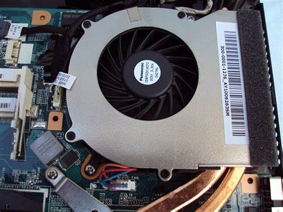Su buen estado es de lo más importante para el correcto funcionamiento del PC, ya que aseguran el correcto flujo de aire en su interior, ingreso y egreso. En este sentido, son los encargados de controlar la temperatura interna del PC, requiriendo una atención adecuada.
4) Limpieza de las unidades de almacenamiento
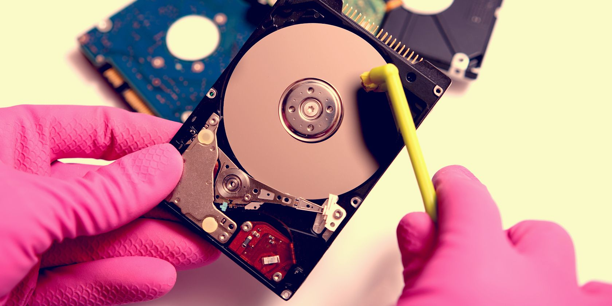Cuando hablamos de unidades de almacenamiento nos referimos a las unidades de CDROM, DVD y/o quemadores, unidades de Diskette o Floppy, Discos Duros y lectores de tarjetas que puedan estar instalados en el PC.
5) Limpieza de los módulos de memoria RAM
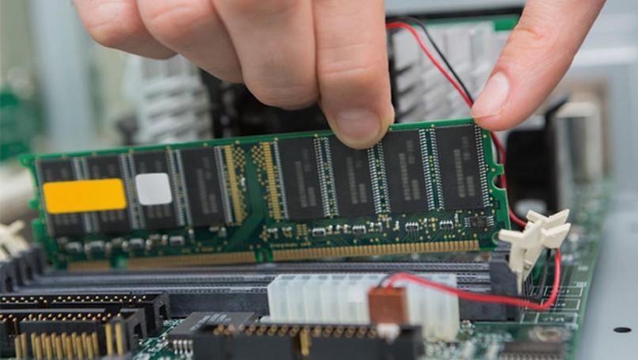Los módulos de memoria RAM, como los que se muestran en la imagen 6, son tal vez, junto al procesador, los componentes más delicados de nuestro equipo, por lo tanto debemos tener sumo cuidado en su manipulación. Es importante mantener puesta la pulsera antiestática durante todo el proceso. Recuerde que de no tenerla, debe aterrizarse o descargarse de energía estática de acuerdo al procedimiento mencionado al comienzo del apartado “limpieza interna”.
6) Limpieza de las Tarjetas de Expansión y Aceleradoras Gráficas
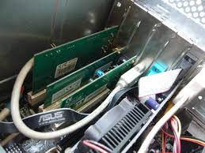En cuanto a las tarjetas de expansión podemos encontrar diferentes tipos como PCI, PCIExpress y Tarjetas Aceleradoras de video que pueden ser de tipo AGP o PCI-Express1. Cada tipo hace referencia a un modelo o estándar de conexión y transferencia de datos. En la imagen siguiente pueden los slots o ranuras de expansión PCI, los cuales son más claros, y los slots PCI Express de tonalidad oscura.
7) Limpieza de la fuente de poder
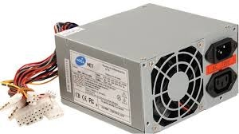La fuente de poder, como la mostrada en la imagen 10, es uno de los componentes más importantes del PC, pues es el que suministra energía a todos los componentes del computador. La fuente de poder no debe pasarse por alto en el momento de la limpieza, dado que la acumulación de polvo o suciedad en ella puede provocar fallas en su funcionamiento, recalentamiento o cortocircuito.
8) Limpieza de la Placa Madre o Mother Board
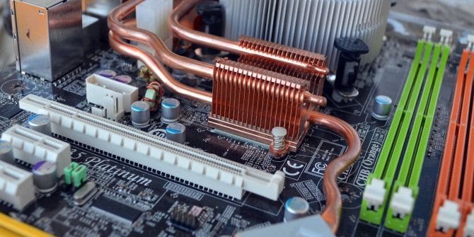La placa madre o Mother Board es el componente fundamental del PC, es
donde se conectan y/o ensamblan todas las partes que le proveen funcionalidad a la
máquina. Sin ésta todos los componentes descritos hasta el momento serían sólo piezas
electrónicas sueltas sin funcionalidad alguna.
Para su limpieza no es necesario desmontarla de la caja o torre, lo que nos ayuda a evitar
cualquier tipo de accidente. En primera instancia se recuerda que en todo el proceso de
limpieza interna es necesario estar aterrizado con la pulsera antiestática, de no tenerla se
recomienda descargarse o aterrizarse nuevamente como se explico iniciando en el apartado
“limpieza interna”.
9) Limpieza externa
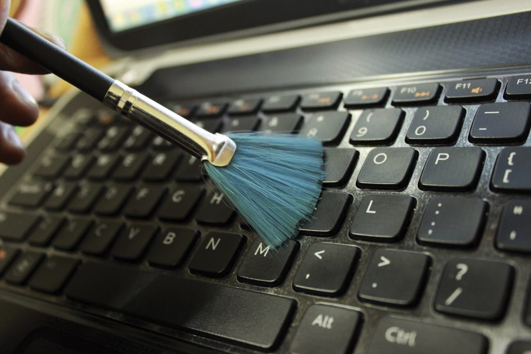Esta abarca la limpieza del teclado, el ratón o mouse y el monitor. Se recomienda no desarmar o destapar ninguno de los componentes mencionados anteriormente, ya que muchos de ellos están diseñados para nunca ser desarmados o destapados, a menos que sea por cuestiones de reparación.
Manual del buen uso del computador
1) Buena postura
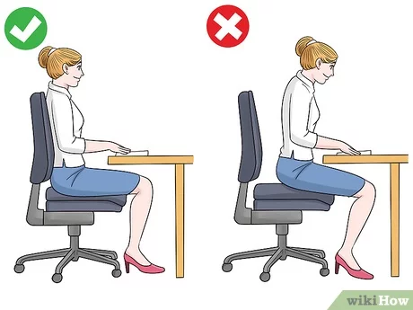2) Buena distancia para cuidar la vista
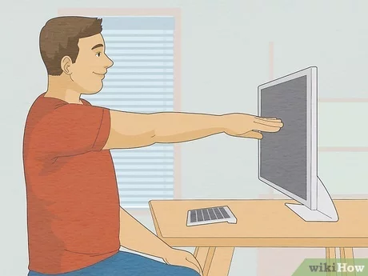 Tenga el monitor a 60 o 70 centímetros de distancia, evitando forzar demasiado la vista. Además, ponga la computadora de manera que quede ligeramente por bajo la visión, eso permite ver hacia abajo y hacia arriba, protegiendo el globo ocular con los párpados.
3) Proteger computadaras de fallas electricas
El voltaje es el trabajo del campo eléctrico que impulsa la carga de una unidad a través de un circuito. El movimiento de electrones se denomina “corriente”. Los circuitos de PC necesitan voltaje y corriente para hacer funcionar los componentes electrónicos. Cuando el voltaje de una PC no es exacto o estable, es posible que los componentes de la PC no funcionen correctamente. Los voltajes inestables se denominan “fluctuaciones de alimentación”.
Dispositivos de protección de alimentación eléctrica:
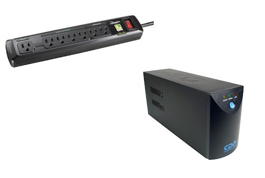A fin de ayuda a proteger contra problemas de fluctuación de alimentación, utilice dispositivos para proteger los datos y los equipos de computación:
4) No comer enfrente de la computadora
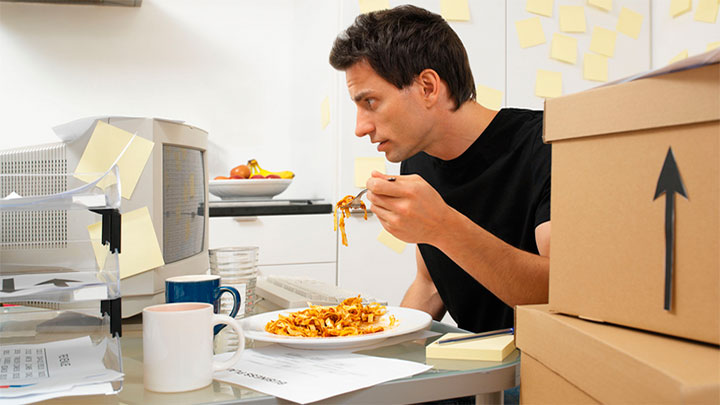 Comer frente a la computadora es más peligroso de lo que pensamos. En principio porque el escritorio de trabajo es considerado uno de los ambientes más contaminados que existen. Solo nuestro teclado, mouse y mesa contienen 400 veces más bacterias que un baño.
5) Recomendacion de un matenimiento constante
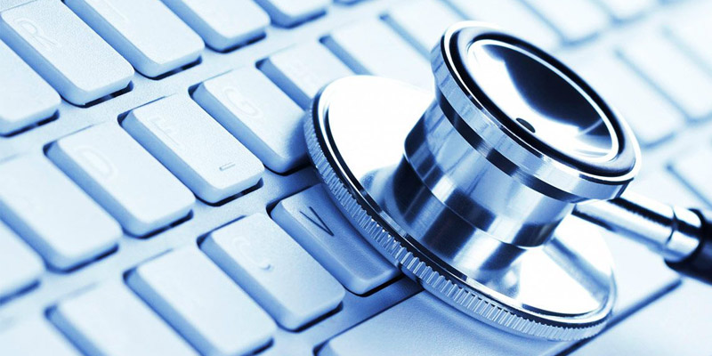Cuidar de nuestro PC es vital para extender la vida útil de ellos, y es que no basta con apagarlo después de usarlo o tener un antivirus que haga el trabajo por nosotros. Hay que tener todos los puntos cubiertos, comencemos.